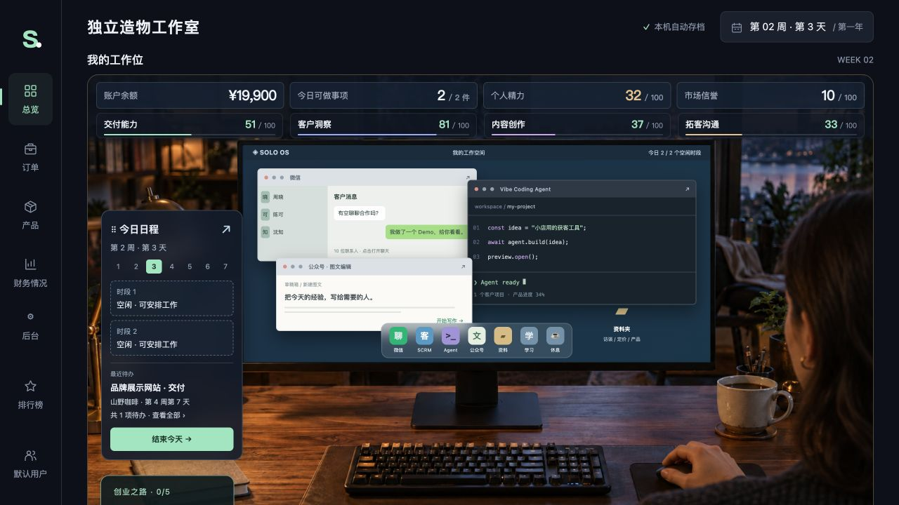

YOUR PROMPT
我想开发一个游戏，一人公司模拟器，模拟一人公司的成立，发展，你先给我一下plan
这一轮的变化
确立主题：一个人如何创办、发展和经营一家公司。
一人公司模拟器的 Vibe Coding 开发历程。
从最初的念头到五个创业里程碑，
把每轮需求和界面变化放在一起看。

原话与截图，分开核对。 按本次对话中的需求顺序整理；标题和变化说明为编辑摘要，Prompt 保留原话。没有当轮截图时，明确标注后续版本参考或当前补拍；它们不代表当时的完成状态。图片可点击放大。
我想开发一个游戏，一人公司模拟器，模拟一人公司的成立，发展，你先给我一下plan
确立主题：一个人如何创办、发展和经营一家公司。
先做一个版本看看效果
从讨论进入可玩的原型。首版独立截图未留存。
做成本地版本
确定本地运行的交付方式。截图展示后续本地版本。
增加进入之后的初始设定，用户的职业背景（设定三个）给出初始值（和初始金钱也有关），性别（和形象相关），给一个故事背景
引入职业、资金、形象与故事；三个背景的早期设定后来被四岗位替代。
这个背景不好，改成开发、产品、运营、销售四个岗位，核心数值和能力体系增加交付能力、客户洞察、内容创作、拓客沟通，按照这几个维度重新构造游戏
围绕交付、洞察、内容和拓客重新组织角色差异；配图为当前版本补拍。
变成本地服务版本
本地 HTTP 服务为后续模型调用提供入口。
四个职业背景，做四个图，然后做成游戏选人的界面感觉，性别放第二页
职业立绘与两步创始人设定，配图为当前版本的两个步骤。
让游戏初始的时候没有合作机会，必须通过寻找客户或者内容营销获客，寻找客户每种初始有不同的潜在客户量，然后开始找客户的时候给出一个对话框，要求输入和客户对话的内容，通过llm给出模拟客户沟通结果来判断是否可以进行转化
从直接获得订单，改为先获客、再沟通、再转化。
做个后台，能接llm。，我要接deepseek
接入本地模型后台，让游戏中的客户能够回应并评估合作意愿。
这周做什么不要做成选择数量加号的方式，就是按钮，点击后进入不同的分支，寻找客户模拟微信的方式，先给出几个潜在客户，（行业、背景信息、岗位）（后台计算其匹配度、决策能力、亲密度决定是否有合作机会）
用行动分支替代计数器，让行业、岗位和关系参与成交判断。
我觉得这个沟通的太细节了，降低细节要求
调整客户反馈要求。未保留这一轮修改后的对话截图，通讯录仅作功能位置参考。
产品研发点击后可以自己设定开发方案，用户给出方向、目标用户、定价、场景、解决的方式，llm判断这个产品的转化价值和潜在用户的匹配度，确定后续是否能进行变现
产品方案与转化价值评估成为研发起点。
改成开发，然后给出一个demo开发中的状态，再消耗8小时时间和相应费用，用vibe coding的方式把demo做出来
把操作变成实际开发，生成可运行的演示原型。截图为后续客户 Demo 分支，不是当时的生成中状态。
（本轮仅上传报错截图，没有文字 Prompt。）
原截图提示“模型回答被截断……本次未扣游戏时间和资金，方案草稿已保留”。未留存修复后的同场景截图。
作出的demo和项目放入到自己的项目库，之后可以在沟通中发出去
把 Demo 和客户项目积累为可分享的作品。
改变UI，寻找客户变成打开微信，产品研发和项目交付变成打开vibe coding agent，内容营销变成写公众号文章，需求调研变成看资料，用更具像化的方式呈现
经营动作变成打开微信、Agent、公众号和资料夹。
把时间线变成一个日程表状态，每天能完成两个事情，另外把承诺的交付和约的时间放在日程表，如果超时降低信誉度也可能会赔钱
每天两件事；交付与预约形成有代价的承诺。
公司现金变成账户余额，用支付宝的模拟界面做
余额与账单采用钱包式交互。补拍图为后来已改名“财务情况”的版本。
我想要的这部分是一个仿真实景效果，就是一个人在电脑前的几个界面
把主要操作放进显示器与书桌组成的工作场景。
绘制的更写实一些
工作位从代码绘制的场景走向写实书房。
承诺了用户做个demo，但客户项目中没有体现
把沟通中的 Demo 承诺加入客户任务，补齐承诺到交付的流程。
增加一个设置功能，切换“简单、仿真”，现在的都是仿真，简单模式是所有需要输入的地方，包括但不限于聊天、做vibe coding都是变成llm生成的3选1的选择题
简单模式提供三种可选方案，仿真模式保留自由输入。
点了没反应
当时附图为公众号三选一与发布按钮；补齐操作限制与反馈。
这个文案改成“正在思考”
精简模型生成时的等待文案。未留存等待状态截图，展示三选一完成后的界面参考。
生成的内容做一定的区分度，有好有坏，引向不同的反馈和结果
为选择加入质量差异，使不同内容引出不同反馈。截图仅展示选项形式，不能单独证明结果差异。
这部分缩小高度，我要让工作位的图成为主视图
压缩顶部经营指标和能力区域。
直接去掉这两行，把信息整合在工作位的图里面
把经营信息和能力条移入工作位。
这部分去掉，整合到主图中，增加一个scrm的功能做这个
用 SCRM 承接潜客、合作进度与客户任务，主图保留入口。
根据选择的人，默认给一些客源，都是主角以前认识的人，默认给出5-10个不等，根据选择的职业变化
不同职业获得 5–10 位旧识；当前旧档不重新生成关系，补拍仅展示联系人结构。
这个图，根据选择的性别调整
让工作位人物随创始人性别变化。补拍展示当前女性工作位。
目前这个游戏的胜利条件是什么
这一轮是规则询问，未留存当时的结局画面。所配图片为之后的五里程碑胜利版本。
把时间表想办法也整合到第一屏能看到
把今日时段、交付与约定嵌入工作位。
改成财务情况，里面的界面仿支付宝，不要有支付宝字样
保留钱包式布局，统一使用游戏内财务命名。
增加多用户系统
本地角色拥有各自独立的公司和存档。
增加创业排行榜，包括收入数、利润数、客户数等排名
用收入、利润、客户等维度比较经营成绩。
日程表可以拖动换位置
让工作位中的日程可拖动，并保存位置。
注册的时候强制输入名字，给几个随机名字（中国风格的）可以随机选择，也可以自己输入
姓名必填，提供随机中文名、换一组和自由输入。
改改文案，弄得更像游戏
“用户管理”变成“创业者档案”，“创建并进入”变成“开启新故事”。
游戏的几个阶段性目标，第一个阶段性目标，开第一单，做完第一单的完整交付，并且收到钱，这是第一个成就任务。然后作为第一个里程碑使用。第二个成就任务就是这个，第一个月这个每月收到的钱和以前自己的工资持平，这是第二个阶段的里程碑任务。第三个阶段的里程碑任务就是自己的这种一个产品可以持续售卖，持续售卖，也就是说最后他要做到的是通过这种获客方式，有人不断地这个，不需要自己再去沟通，产生标准化产品，然后跑通MVP，持续有收入，每天持续有收入。第四个阶段就是这个，它的持续收入超过自己既往的工资。第五个阶段是持续的收入能够达到自己的工资的两倍。然后这是最终的胜利的条件。然后系统地去做整个的任务和阶段性成功的设计，同时检验现在所有的数值和相应的标准，并且完成完整测试。
落地五个里程碑、每日自动销售、工资基准和通关判定。图为独立测试存档的胜利画面；85 项测试通过。